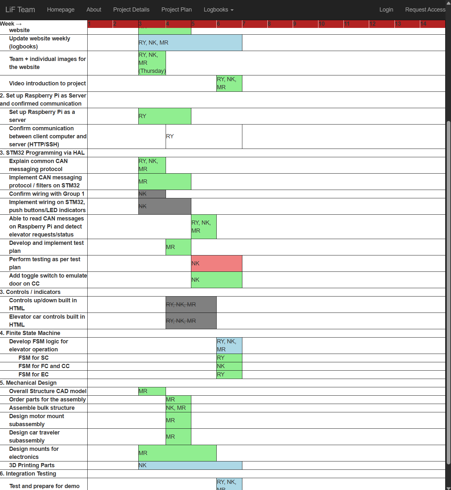
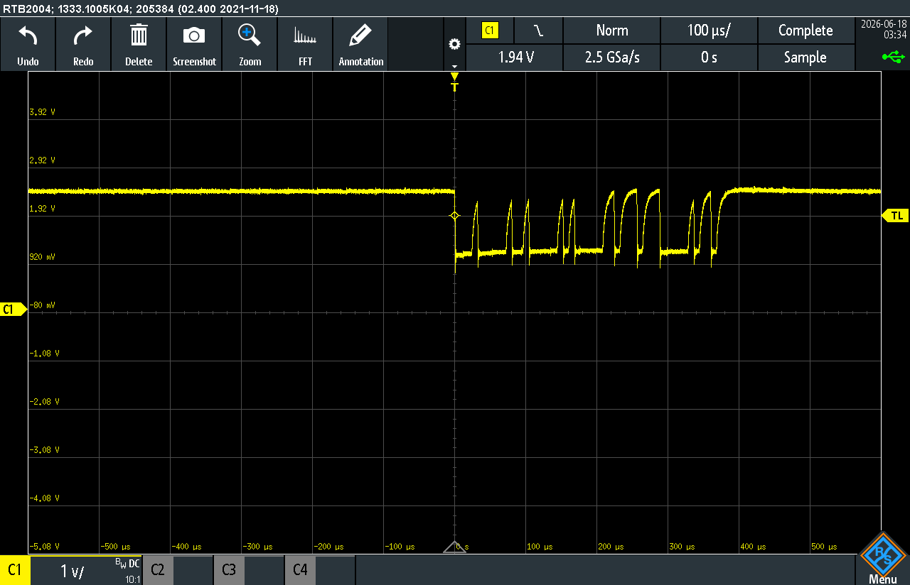
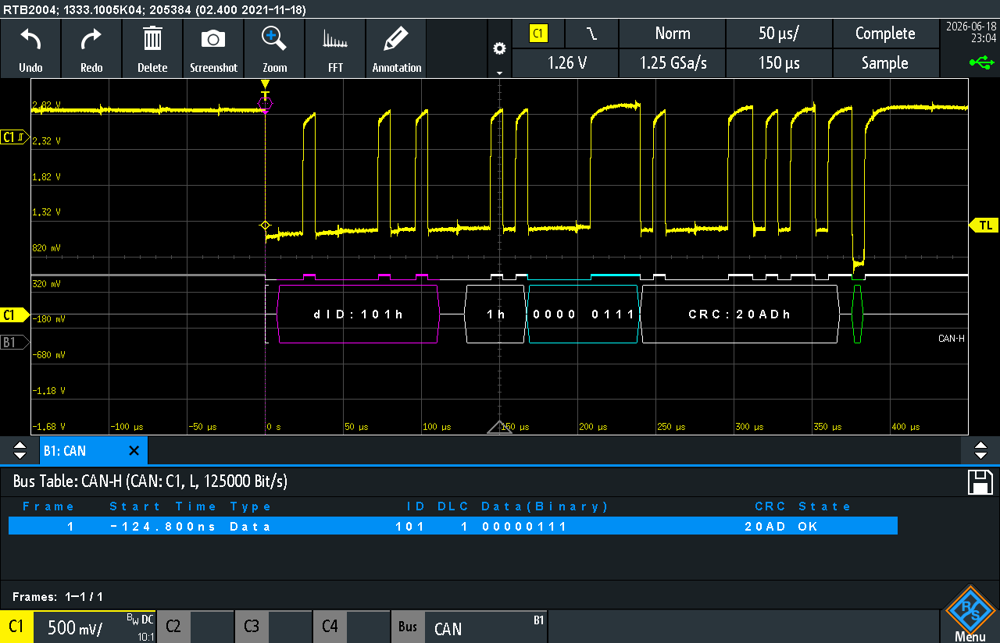
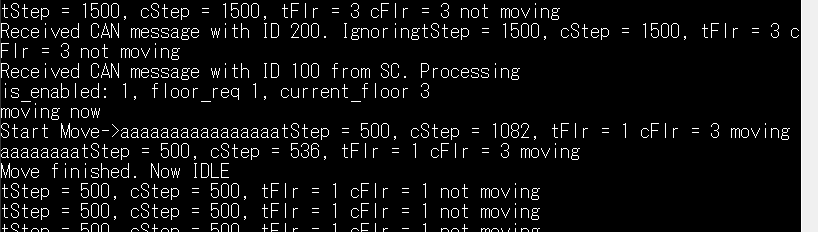

I added tasks the team performed during the phase to document
progress as well as help prepare and organize new tasks to
perform before the upcoming phase 1 demonstration. One of the
notable features of the new gantt_chart.css is
floating top row. The new styling also allows to mark tasks as
completed, behind,
ongoing, and omitted. See new Gantt
chart on our Project Plan page.
This assignment, while unrelated to the project, requires our team to make major changes to the website, so it gets a mention here. The appearance of the website in upcoming project submissions will improve, as we add more styling and functionality to it.


Rita delivered an initial untested version of SC FSM implementation.
Since she had to leave the lab early, I tested the code for her.
To do this initial testing, I used git to transfer the source files and test the program on RPi, which proved to be very time-consuming and tedious. This setup required me to:
git add .git commit -m "message"git pushgit pullmake cleanmake./main
The testing revealed several bugs and errors in the code, but,
fortunately, all of the bugs were caught by the compiler as
warnings, so troubleshooting was relatively quick. 
As the result of this, all parts of the system moved together for the first time.
Additionally, new motor pulley wheel needs to be installed to proceed with testing.
I added a test plan to our team's internal spreadsheet. Here is the copy of the test plan converted to HTML format.
| A | B | C | D | E | F | G | |
|---|---|---|---|---|---|---|---|
1 | # | Name | Procedure | Expected Outcome | Passes | Date Tested | Inspector |
2 | 0 | Power on | Supply power to the system | All controllers start working EC performs homing procedure EC reports ready after homing is done | |||
3 | 1 | CAN signal integrity | Connect CAN bus to an oscilloscope Enable CAN protocol decoding Record CAN traffic Use Serial to monitor CAN packet decoding on each controller (one-by-one is allowed) | Oscilloscop can decode CAN frames Each controller correctly receives and decodes CAN frames | |||
4 | 2 | EC motion test | Connect to EC with Serial Perform homing Send EC to each of the floors | Motion is smooth Car acceleration is limited to a predefined value Car stops within 5mm of each floor level EC reports car height in mm correctly | |||
5 | 3 | Floor Request | Power on the system and let it initialize Use FC button to request the car to move to the corresponding floor | CAN frames are exchanged between FC and SC, then SC and EC Car is moved to the requested floor | |||
6 | 4 | Car Request | Power on the system and let it initialize Use CC button to request the car to move to the corresponding floor Toggle the door switch on CC to allow motion | CAN frames are exchanged between CC and SC, then SC and EC Car does not move until door toggle switch is put in closed position Car is moved to the requested floor |